Service design · Northwestern EDI with JPMorgan Chase · Winter 2026
FamilySync
An agent that coordinates a family when a child's day changes. It does the legwork. A person approves every handoff.
11:00 Wednesday
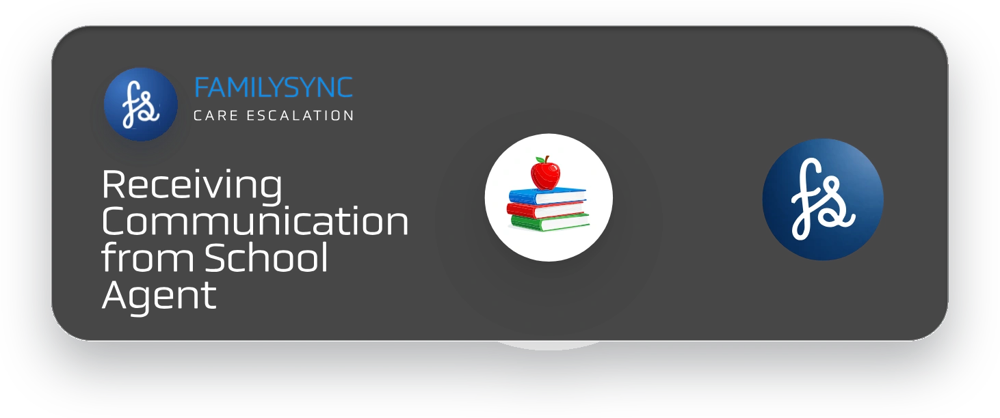
Notify Stacy
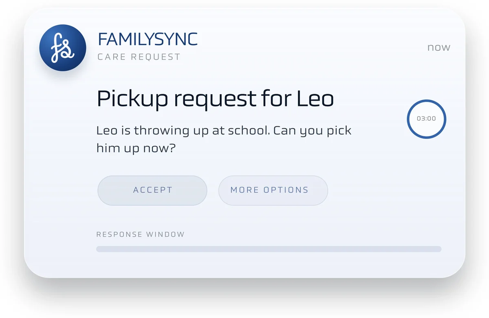
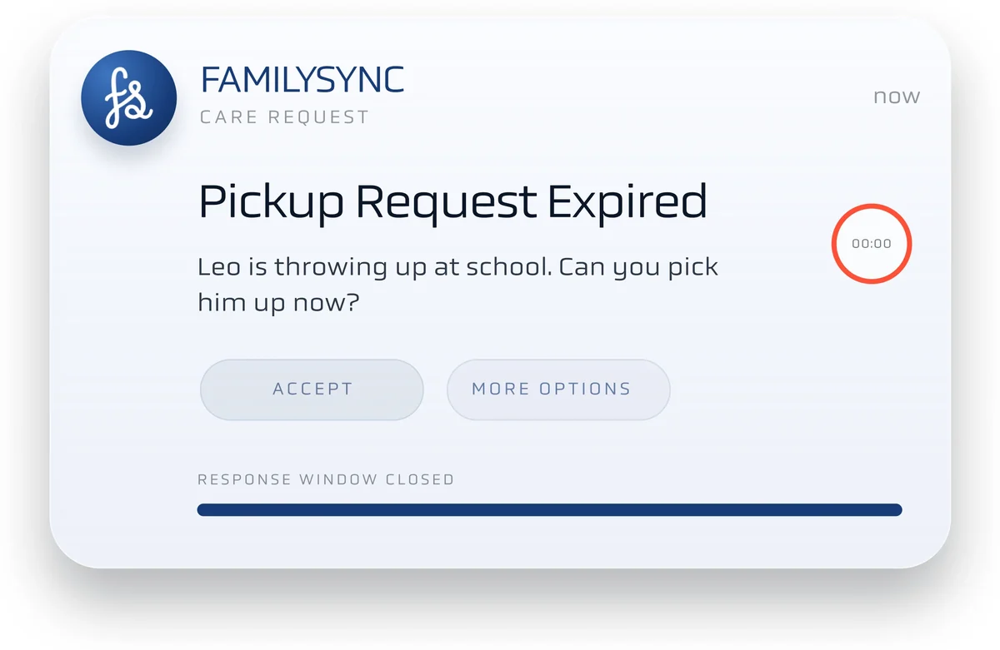
01 · Context
The school calls. Stacy is in a meeting.
Leo is sick and someone has to get him. The request is one notification. The coordination behind it is six questions at once.
The window closes at 11:03. FamilySync doesn't wait for Stacy to find the time. It queues what she was carrying and starts on the first one.
- Who should I call first? Who will be available?
- But I’m in the middle of an important meeting...
- When should I let Robert know? He will be worried!
- I’m running out of time! I need to figure this out!
- How am I going to plan dinner and take care of Leo?
- Is there any food left in the fridge?
02 · Research
We started with the afternoons that went wrong.
Interviews with caregivers about recent child-health emergencies. Two findings set the rules for everything after.
- Care vs control
People want an agent that feels caring and proactive, but still keeps them in control.
- Trust vs privacy
The line between helpful and creepy is clarity, permission, and user approval.
03 · Synthesis
Three principles. Each one is a handoff.
1Stacy FamilySync
Coordination
Stacy's window closed, so the agent searches calendars and contacts secondary caregivers. Interrupt stays on screen.
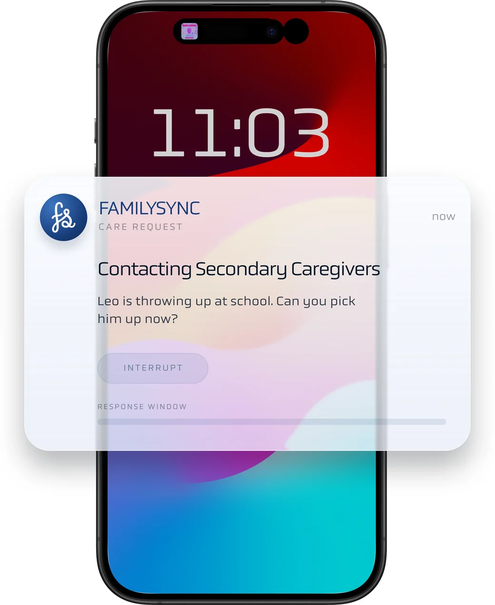
2FamilySync Cynthia
Communication
Leo's grandmother gets the request through the family's trusted circle and accepts with one slide.
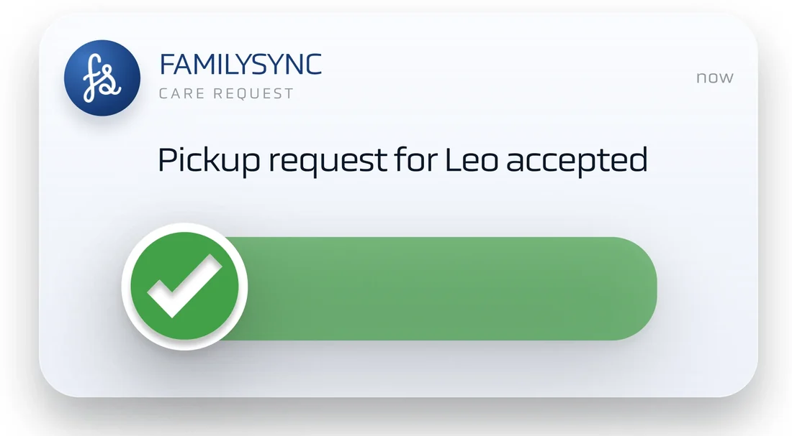
3Cynthia Stacy and Robert
Connection
Both parents are updated automatically. Caregivers may be absent, but they still want to feel present.
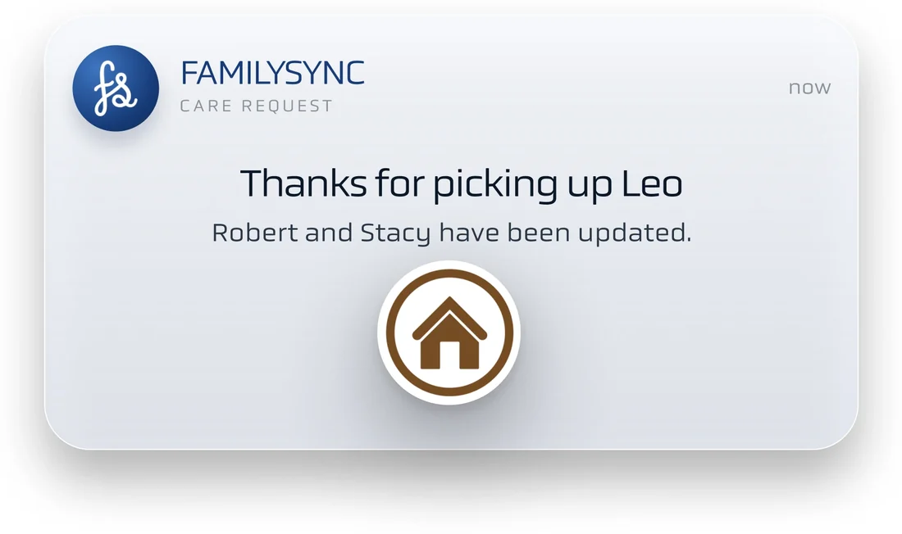
The tension
Automation can create checking work.
If a parent has to verify everything the agent did, it has handed them a second job. So each handoff ends in one clear ask that a person answers.
04 · Exploration
Three directions, two concepts, one service.
3 directions
- Wait-time updates
- Monitoring
- Calendar support
2 concepts
- Concept one
- Concept two
1 service
FamilySyncOne coordinator that carries a single event from the school's alert to dinner.
05 · My part
Leo is home. The agent keeps going.
This segment is mine. Two of Stacy's questions are still open: dinner, and what's in the fridge.
It spawns a sub-agent for them.
The sub-agent finds a soup recipe.
It turns the recipe into an Instacart cart.
Then it stops and asks Stacy, with three ways out.
- Confirm orderTake it as it stands
- Manage cartKeep the help, change the contents
- Decline taskStop, no explanation owed
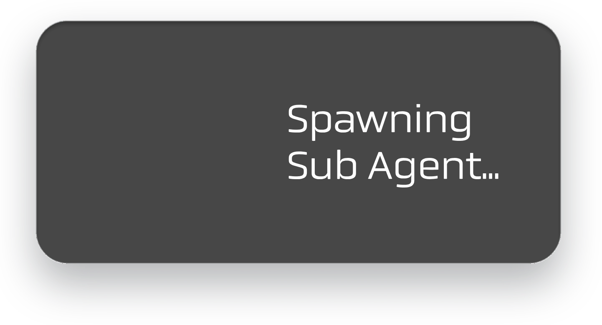
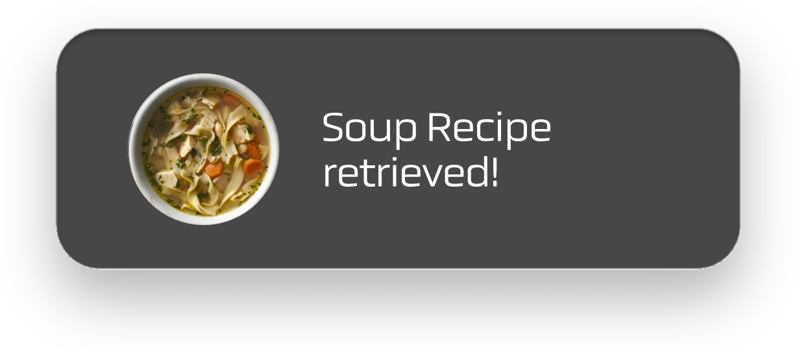
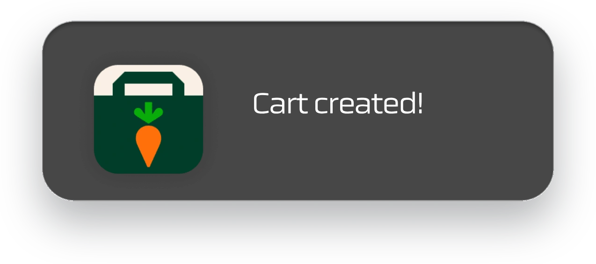
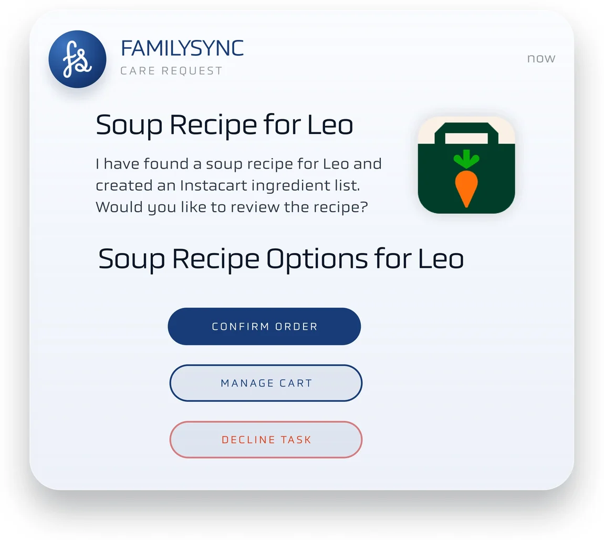
06 · Testing
One card carries the whole payment.
After testing feedback, payment became one integrated step: what it's for, how it's paid, and Stacy's answer, together.
- House rule
- Auto-approve under $50
- Assumption
- These rules still reflect parent intent
- Risk
- Old rules get treated like permission
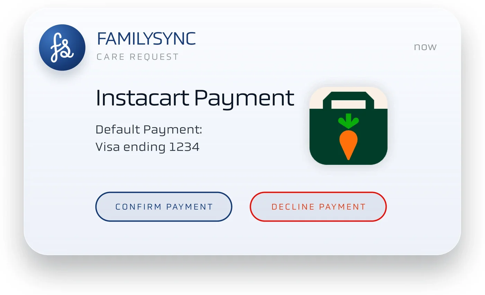
- What it's forInstacart payment
- How it's paidDefault card, Visa ending 1234
- Her answerConfirm or decline
Waiting on you
FamilySync does not pay without a person.
07 · Outcome
One event, carried end to end.
From the school's alert to dinner, in one thread. The agent did the legwork; a person answered at every handoff.
- Leo needs pick up
- Notify Stacy
- Search calendars
- Cynthia contacted
- Leo picked up
- Location updated
- Sub agent activated
The six questions, answered
Who should I call first? Who will be available?
Calendars searched, Cynthia contactedBut I’m in the middle of an important meeting...
The window closed and the agent escalatedWhen should I let Robert know? He will be worried!
Robert and Stacy updated automaticallyI’m running out of time! I need to figure this out!
Leo picked up, location updatedHow am I going to plan dinner and take care of Leo?
Sub-agent found a soup recipeIs there any food left in the fridge?
Cart created, waiting on a yes
Humans approve every handoff. Accept, interrupt, manage, decline and confirm are always a person's call.
It never makes clinical decisions. FamilySync moves logistics: who, when, where, and what's for dinner.